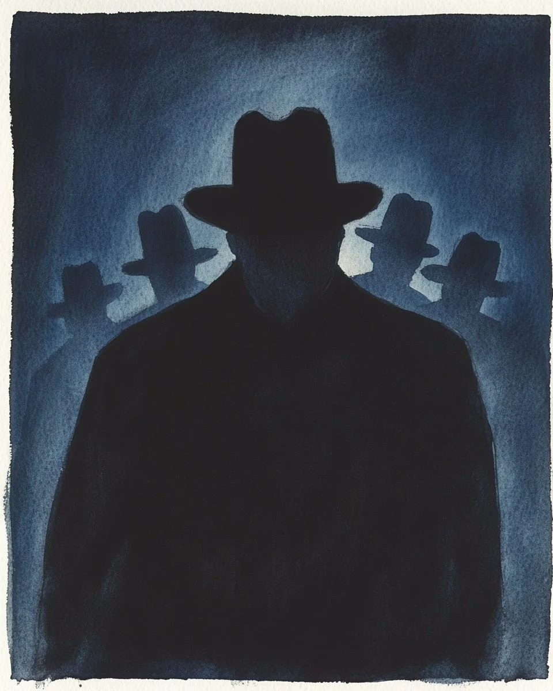

“제 이름은 르네입니다. 저는... 사람들을 따라다닙니다.”
[”My name is René. I... follow people.”]
박수 소리가 어둠 속에서 터졌다. 열두 명의 남자들이 고개를 끄덕였다. 모두 같은 모자를 쓰고 있었다. 같은 코트. 같은 그림자 같은 얼굴.
[Applause erupted from the darkness. Twelve men nodded. All wearing the same hat. Same coat. Same shadow-like faces.]
“환영합니다, 르네 씨.”
진행자가 말했다. 아니, 진행자들이. 목소리가 하나인지 열둘인지 알 수 없었다.
[”Welcome, René.”
The facilitator spoke. Or facilitators. Impossible to tell if the voice was one or twelve.]
르네는 옆자리 남자를 봤다.
“저 사람, 어디서 봤는데...”
[René looked at the man beside him.
“That guy... I’ve seen him somewhere...”]
“당연하죠.” 남자가 대답했다. “제가 당신을 3주째 따라다니고 있으니까요.”
[”Of course.” The man answered. “I’ve been following you for three weeks.”]
르네가 웃으려다 멈췄다. 반대편 남자가 손을 들었다.
“저도요. 근데 저는 저 사람을 따라다녀요.” 그가 옆자리를 가리켰다.
“그리고 저는 저 사람을요.”
“저는 저 사람을.”
[René started to laugh, then stopped. The man across raised his hand.
“Me too. But I follow that guy.” He pointed beside him.
“And I follow that guy.”
“I follow that guy.”]
원이 완성됐다.
[The circle completed itself.]
진행자가 미소 지었다. 적어도 미소처럼 보이는 무언가.
“그래서 저희 모임은 끝나지 않습니다. 아무도 집에 먼저 갈 수 없거든요.”
[The facilitator smiled. At least something that resembled a smile.
“That’s why our meetings never end. No one can go home first.”]
르네는 문을 봤다. 문 앞에 세 명이 서 있었다. 그들도 그를 보고 있었다.
기다리고 있었다.
[René looked at the door. Three men stood before it. They were watching him too.
Waiting.]